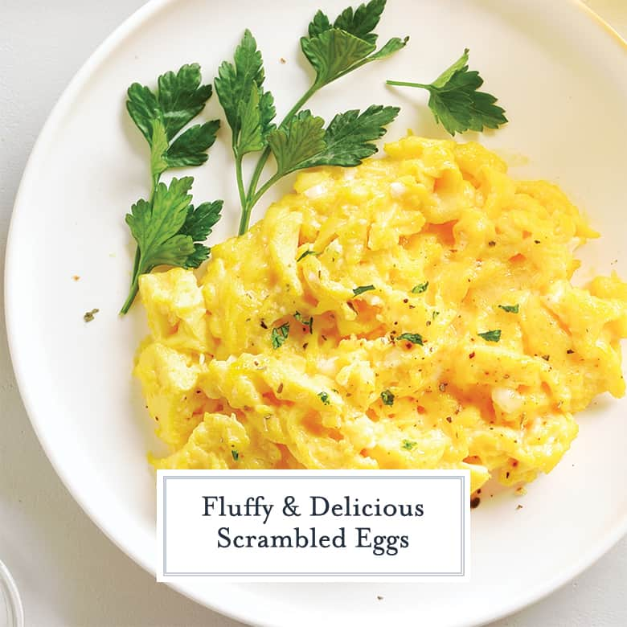

Eggs

Description
Scrambled eggs are a simple and versatile breakfast dish made by whisking eggs together and then gently cooking them in a pan, typically with a small amount of butter or oil. The eggs are frequently stirred during the cooking process, which creates a soft, fluffy texture. Scrambled eggs can be customized with various seasonings, herbs, vegetables, or cheeses, making them a popular and satisfying meal option.
Ingredients
- Eggs
- Butter or oil
- Salt
- Pepper
- Optional: milk or cream
- Optional: herbs, such as chives or parsley
- Optional: vegetables, such as bell peppers or onions
- Optional: cheese, such as cheddar or feta
Steps
- Crack the desired number of eggs into a bowl.
- Whisk the eggs until well combined, optionally adding a small amount of milk or cream for a creamier texture.
- Season the whisked eggs with salt and pepper to taste.
- Heat butter or oil in a non-stick skillet over medium-low heat.
- Pour the whisked eggs into the skillet, allowing them to cook for a moment before gently stirring with a spatula.
- Continue to stir the eggs occasionally as they cook, ensuring even cooking and a soft, fluffy texture.
- If desired, add herbs, vegetables, or cheese to the eggs during the cooking process.
- Cook the eggs until they are just set but still slightly moist, then remove from heat.
- Transfer the cooked scrambled eggs to a plate and serve immediately.